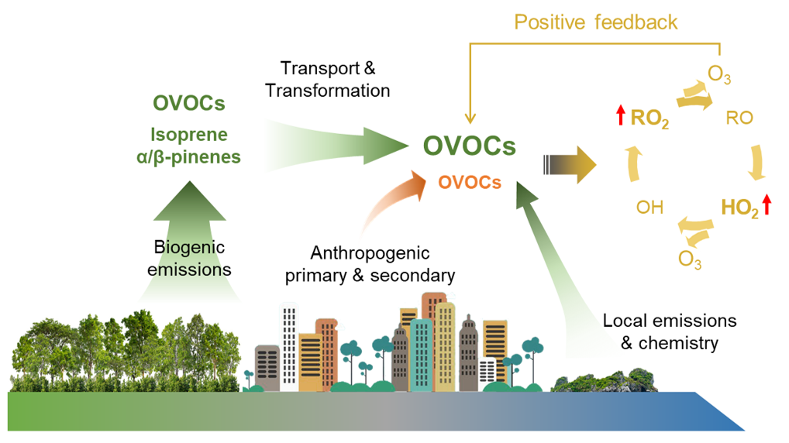
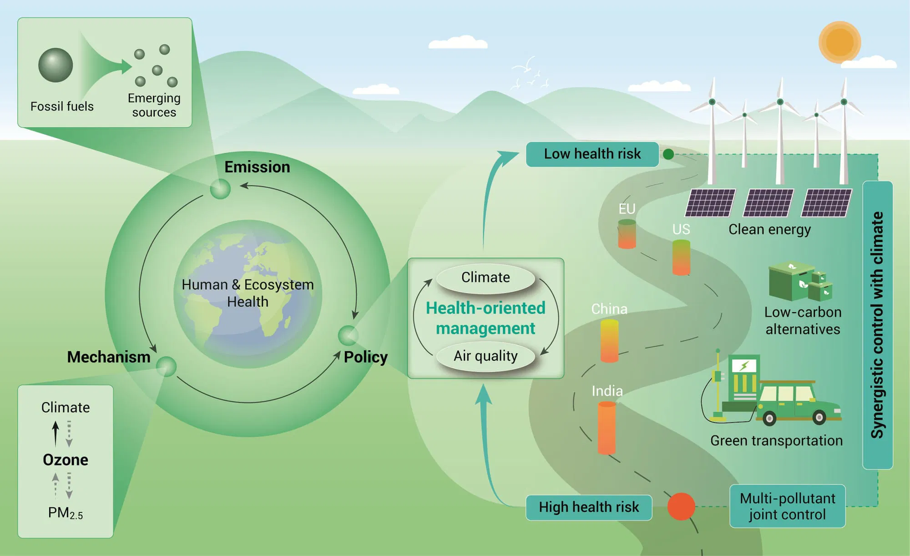
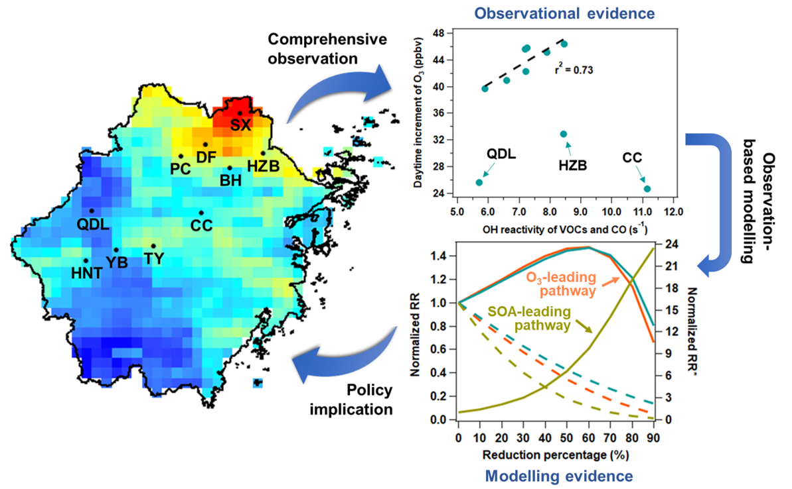
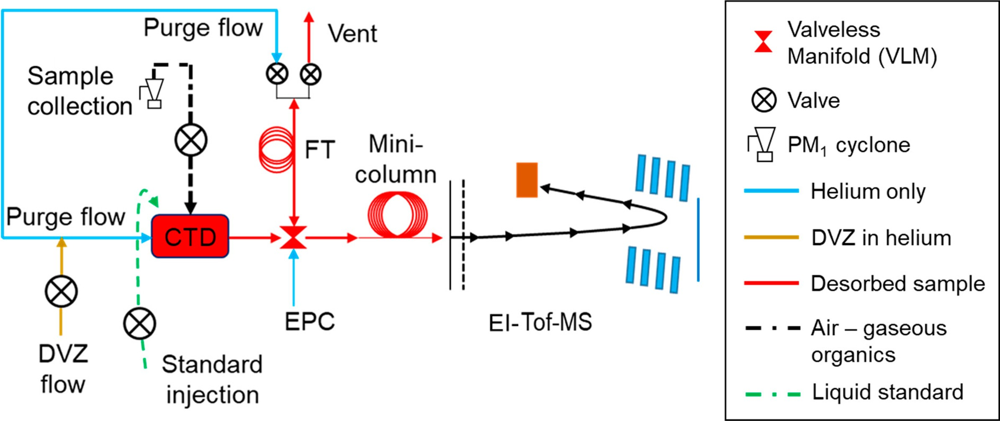
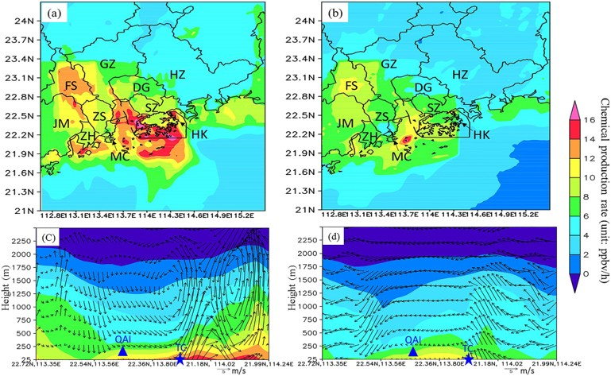
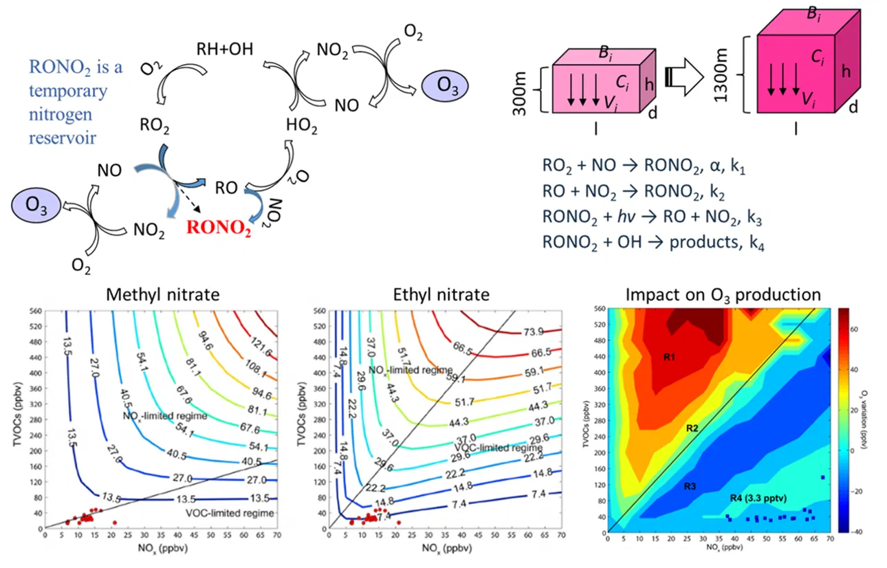

Selected Publications
-

Significant Biogenic Source of Oxygenated Volatile Organic Compounds and the Impacts on Photochemistry at a Regional Background Site in South China
Environmental Science & Technology (2024)
Xiaopu Lyu , Hongyong Li , Shun-Cheng Lee , Enyu Xiong , Hai Guo , Tao Wang , Joost de Gouw
-

A synergistic ozone-climate control to address emerging ozone pollution challenges
One Earth (2023)
Xiaopu Lyu , Ke Li , Hai Guo , Lidia Morawska , Beining Zhou , Yangzong Zeren , Fei Jiang , Changhong Chen , Allen H. Goldstein , Xiaobin Xu , Tao Wang , Xiao Lu , Tong Zhu , Xavier Querol , Satoru Chatani , Mohd Talib Latif , Daniel Schuch , Vinayak Sinha , Prashant Kumar , Benjamin Mullins , Rodrigo Seguel , Min Shao , Likun Xue , Nan Wang , Jianmin Chen , Jian Gao , Fahe Chai , Isobel Simpson , Baerbel Sinha , Donald R. Blake
-

Evidence for Reducing Volatile Organic Compounds to Improve Air Quality from Concurrent Observations and In Situ Simulations at 10 Stations in Eastern China
Environmental Science & Technology (2022)
Xiaopu Lyu , Hai Guo , Qiaoli Zou , Ke Li , Enyu Xiong , Beining Zhou , Peiwen Guo , Fei Jiang , Xudong Tian
-

In Situ Measurements of Molecular Markers Facilitate Understanding of Dynamic Sources of Atmospheric Organic Aerosols
Environmental Science & Technology (2020)
Xiaopu Lyu , Hai Guo , Dawen Yao , Haoxian Lu , Yunxi Huo , Wen Xu , Nathan Kreisberg , Allen H Goldstein , John Jayne , Douglas Worsnop , Yan Tan , Shun-Cheng Lee , Tao Wang
-

An Ozone "Pool" in South China: Investigations on Atmospheric Dynamics and Photochemical Processes Over the Pearl River Estuary
Journal of Geophysical Research: Atmospheres (2019)
Yangzong Zeren, Hai Guo, Xiaopu Lyu, Fei Jiang, Yu Wang, Xufei Liu, Lewei Zeng, Mei Li, Lei Li
-

Modeling C1-C4 Alkyl Nitrate Photochemistry and Their Impacts on O3 Production in Urban and Suburban Environments of Hong Kong
Journal of Geophysical Research: Atmospheres (2017)
X. P. Lyu, H. Guo, N. Wang, I. J. Simpson, H. R. Cheng, L. W. Zeng, S. M. Saunders, S. H. M. Lam, S. Meinardi, D. R. Blake